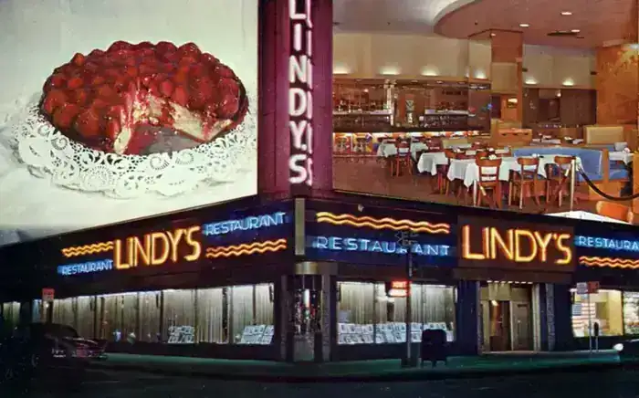

The claim in its strong form
For non-perishable things — ideas, technologies, institutions, books — the expected additional lifespan is proportional to current age. A technology that has survived a century has an expected future of about a century; double its age and you double the forecast.
Maps, diagrams and images


Mandelbrot noticed the pattern in a 1964 paper and named it after the deli. Nassim Taleb made it a principle in Antifragile (2012), using it against forecasts that a thing is about to die because it is old.
The mechanism is a decreasing hazard rate: the longer something has survived, the lower its per-period chance of dying becomes, because the things that kill it have already been survived. That is plausible for ideas and institutions and false for light bulbs.
Where the reasoning gets loose
The strong proportional form is not a theorem; it is a special case. It holds exactly when survival times follow a power law with exponent one, or equivalently when the hazard rate falls as one over age. Nothing guarantees that, and the empirical literature on technology and institution survival does not show a universal exponent.
Selection is the second problem. We observe the survivors, so any sample of long-lived things is biased by construction — the same reason a century of successful companies tells you little about the next century's.
There is also a category error in much of the popular use. The effect applies to non-perishable things; a car, a person, a star and a hard drive all have increasing hazard rates, and applying Lindy to them is straightforwardly wrong. Taleb says so explicitly, and the caveat is usually dropped in retelling.
As a prior: a technology that has been in use for 2,000 years is a better bet for the next century than one launched last year, absent specific information. That is a reasonable Bayesian prior, not a law.
As a corrective: it punctures the reflex that old means obsolete, and it predicts that most futuristic predictions about the death of institutions will fail.
As a trap: it also predicts survival for things that deserve to die, and it has no way to distinguish a durable idea from a persistent one. Horses lasted millennia and then did not.
The archive labels this live debate because the intuition is sound, the mathematics is contingent, and almost every popular statement of it is stronger than the evidence supports.
Why it is in the archive
Because it is a rule of thumb that is genuinely useful and routinely over-applied, and because the difference between a prior and a law is the point of this whole collection.
Related: black swans, the doomsday argument.
Sources for this page
- Wikipedia, “Lindy effect” — the rule, its mathematics and criticismen.wikipedia.org
- Mandelbrot (1964), International Economic Review — on the survival of publicationsdoi.org
- Taleb (2012), Antifragile — the chapter that popularised the ideaen.wikipedia.org
- Wikipedia, “Survival analysis” — hazard rates and why the exponent mattersen.wikipedia.org
Open resources on this topic
- PapersOpen-access articles: DOAJ · PubMed Central · Internet Archive Scholar
- BooksPublic-domain and borrowable copies: Open Library · Project Gutenberg · Google Books · Internet Archive
More images
Cite this page
Momin, S. (2026). The Lindy Effect. The Larger World Archive. https://drsamonline.github.io/LARGE_GLOBE/lindy-effect.htmlMomin, Sohil. “The Lindy Effect.” The Larger World Archive, 2026, https://drsamonline.github.io/LARGE_GLOBE/lindy-effect.html.Momin, Sohil. “The Lindy Effect.” The Larger World Archive, 2026. https://drsamonline.github.io/LARGE_GLOBE/lindy-effect.html.@misc{the2026lindy,
author = {Momin, Sohil},
title = {The Lindy Effect},
year = {2026},
howpublished = {The Larger World Archive},
url = {https://drsamonline.github.io/LARGE_GLOBE/lindy-effect.html},
note = {Last reviewed 20 November 2026}
}Last reviewed 20 November 2026 · Corrections policy · this page is not peer reviewed